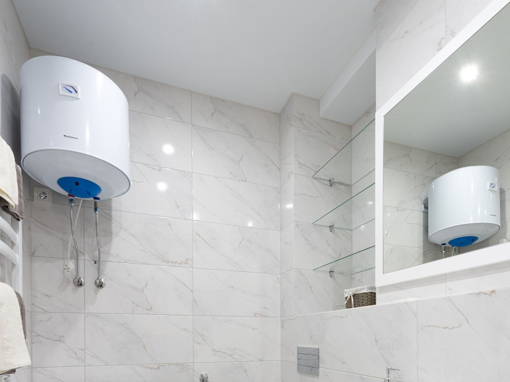

An electric water heater does not burn anything, so it is tempting to think nothing much can go wrong. In practice, the parts that do the work (two heating elements, two thermostats, and a high-limit safety switch) fail in predictable ways. The upper thermostat heats the top third of the tank first, then switches power to the lower element. If the upper element or thermostat fails, the lower one never gets its turn, and you get no hot water at all. If the lower element burns out, the top of the tank still heats, so you get a short burst of hot water that runs out fast. For Louisville, KY homeowners, knowing which symptom you have is the first step toward the right fix.
Louisville Water Heater tests electric heaters with a meter, not a hunch. With power confirmed off, our technicians measure element resistance and look for a short to the tank, a common failure that can keep tripping the high-limit. Then, following careful live-testing procedure, we verify voltage at the thermostats and watch how power moves from the upper side to the lower side. We look for scorched wires, melted insulation, and loose terminal screws, since a loose connection can heat up enough to damage the thermostat and the wiring around it. If the reset button has tripped, we find out why before resetting it, because a high-limit that trips is doing its job.
Most electric water heater repairs are finished in one visit. We replace burned-out elements (draining the tank first and refilling it completely before power goes back on, since an element energized in open air burns out in seconds), replace upper and lower thermostats and high-limit switches, repair scorched wiring and loose connections, and flush out sediment that is burying the lower element. When the tank is leaking or the heater has passed about twelve to fifteen years, we tell you honestly and walk you through replacement. New installations include confirming that the circuit, breaker, and wire size match the heater, plus an expansion tank, drain pan, and seismic straps wherever code calls for them. We can also talk through a heat pump water heater if lower operating costs appeal to you. Call (502) 205-4594 for electric water heater service in Louisville.
Most of our service calls are for Water Heater Repair in Louisville and Water Heater Installation in Louisville. That's the place to start for most homes.

How to Tell Something Is Wrong
A heater that is starting to struggle rarely hides it for long, and the clues are easy to spot once you know them. Keep an eye out for the following:
- Water dripping from an element gasket or pooling under the tank
- A breaker that trips when the heater calls for heat
- Water that comes out scalding hot
- A tank that has stopped heating completely
- Browned wiring or a burnt odor from behind the access cover
- A red reset button that keeps tripping
- Crackling noises as the heater runs, often from sediment
- Hot water that runs out after just a few minutes
Don't Wait for a Total Failure
A worn-out anode rod, a sediment-choked tank, or a weak thermocouple rarely fixes itself, and the repair usually costs more the longer it waits. If you notice any of these signs, contact Louisville Water Heater at (502) 205-4594 for a prompt inspection.
Water Heater Trouble? Call Us.
Our experienced technicians are standing by to help.
Call (502) 205-4594 NowFrequently Asked Questions About Electric Water Heater Services
The Benefits of Professional Electric Water Heater Services
Two things make electric water heater repair trickier than it looks: the power involved and the overlap between symptoms. These heaters run on 240-volt circuits, and the thermostats and elements are wired to terminals that stay live unless the breaker is off and verified. On the diagnostic side, a heater that will not heat might have a failed element, a bad thermostat, a tripped reset, or a wiring problem, and a reset that keeps tripping is a warning, not an annoyance. Trial and error adds up quickly.
Professional service gets you the right fix the first time and a safe heater afterward. Rather than guess, we meter each element and thermostat, check for shorts to the tank, and inspect every wire and terminal for heat damage. Every repair includes a proper drain and refill, followed by an amp-draw check once power returns. When replacement makes more sense, we confirm the breaker size and wire gauge match the new heater and install the expansion tank, drain pan, or seismic straps your code requires. The result is dependable hot water without surprises.
What to Expect From Our Team
Good water heater work comes down to a consistent routine, and ours starts with a real diagnosis instead of a guess. Here's the short version:
Circuit & Component Testing
We check the breaker and supply voltage, then we meter both elements for resistance and shorts to ground, both thermostats, and the high-limit switch.
What Failed and What It Costs
You see what failed and learn why, then we give a firm price before starting. If the tank is leaking or the heater is near the end of its life, we tell you plainly.
Same-Visit Repair
Failed elements and thermostats are typically swapped the same visit. We drain and refill the tank properly so a new element is never powered dry.
Verified Heating
Before we leave, we watch the heater run, measure amp draw on each element, and confirm the thermostats hand off correctly.
Want a Professional Opinion?
Call Louisville Water Heater to talk through your situation with an experienced technician.
Call (502) 205-4594 TodayWater Heater Care Tips From Our Technicians
A few preventive steps can help you avoid a cold shower or a wet floor down the road. Put these technician-approved steps to work at home:
- Choose a setting of about 120 degrees to balance comfort, safety, and operating cost
- Flush the tank regularly to keep minerals from piling up around the lower element
- Make sure water flows steadily from a hot tap before the heater's power goes back on
- Check the T&P relief valve annually, and call if it drips afterward
- Treat a tripped high-limit as a warning sign, not a nuisance
- Consider a water softener if you have hard water, since it slows sediment and scale on the elements
- Have the sacrificial anode inspected every three to five years
Should You DIY or Call a Pro?
A few tasks, like checking the temperature setting or lifting the relief valve lever to test it, are fine for homeowners, but most water heater work involves gas lines, venting, 240-volt circuits, or a tank full of scalding water, and that belongs with a professional. Here's how the two approaches stack up:
| Factor | DIY Attempt | Hiring a Pro |
|---|---|---|
| Diagnosis | Guess between elements, thermostats, and breaker | Every element and thermostat metered |
| Electrical Safety | Live 240V terminals behind the panel | Power verified off before any work |
| Element Replacement | Tank not fully refilled before power-up | Tank drained, refilled, and purged of air first |
| Reset Button | Reset repeatedly without finding the cause | Cause of the trip found and fixed |
| Tank Condition | Sediment left burying the lower element | Sediment flushed when an element is replaced |
| Result | Element fails again within months | Real fault repaired and tested |
Book a Visit Today
Cold showers and damp floors don't get better on their own. Louisville Water Heater can have a technician headed your way soon.
Call (502) 205-4594 NowWhere We Provide Electric Water Heater Services
We bring electric water heater services to homes and businesses in town and across the nearby communities. Pick your area to see local details.